Select an alternative music notation system by clicking on it. Scroll down for more options.[X]
-
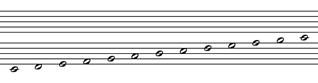5 Lines, Whole Step Apart, All Hollow Noteheads
-
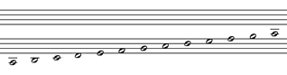4 Lines, Whole Step Apart, All Hollow Noteheads
(Untitled by Johann Ailler, 1904)
-
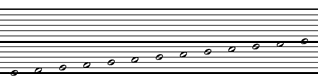6 Lines, Whole Step Apart, All Hollow Noteheads
(Untitled by Klaus Lieber, 1983)
-
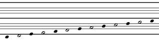4 Lines, Whole Step and Major 3rd Apart, 6-6 Noteheads (C is Solid) (Isomorph Notation by Tadeusz Wójcik, 1952)
(except for non-circular noteheads)
-
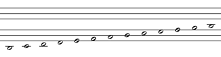3 Lines, Minor Third Apart, All Hollow Noteheads
(Numbered Notes, Notes-Only Version by Jason MacCoy, 2009)
-
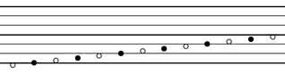3 Lines, Major Third Apart, 6-6 Noteheads (C is Hollow)
(6-6 Klavar by Cornelis Pot, 1972)
(except for non-vertical staff and non-circular noteheads)
-
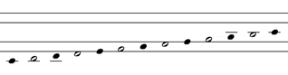2 Lines, Major Third Apart, 6-6 Noteheads (C is Solid)
(Untitled by Johannes Beyreuther, 1959)
(except for non-circular noteheads)
-
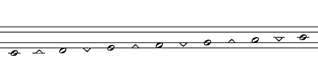2 Lines, Major Third, Compact Staff, All Hollow Noteheads
(Twinline by Thomas Reed, 1986)
-
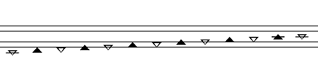2 Lines, Major Third, Compact Staff, 6-6 Noteheads (C is Hollow) (TwinNote by Paul Morris, 2009)
-
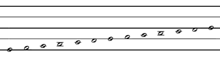2 Lines, Tritone Apart, All Hollow Noteheads
(MUTO by MUTO Music Method Foundation, 1995)
-
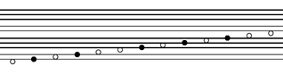7-5 Line Pattern, 7-5 Noteheads (C is Hollow)
(Klavar, Mirck Version by Jean de Buur, 2006)
(except for non-circular noteheads)
The systems below have the same staff line pattern as those above, but with a different notehead pattern and/or position of the notes on the staff.
-
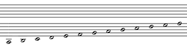5 Lines, Whole Step Apart, All Hollow Noteheads
(Untitled by Grace Frix, 1992)
-
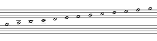4 Lines, Whole Step Apart, All Hollow Noteheads
(6-6 Tetragram by Richard Parncutt, 1996)
-
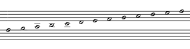4 Lines, Whole Step Apart, All Hollow Noteheads
(A-B Chromatic Notation by Albert Brennink, 1976)
-
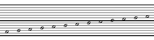6 Lines, Whole Step Apart, All Hollow Noteheads
(Six-Line Notation Systems by Gustave Decher, 1877 and by Hans Krenn, 1910)
-
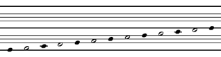4 Lines, Whole Step and Major 3rd Apart, 6-6 Noteheads (C is Solid)
(DA by Rich Reed, 1986)
(except for ledger line pattern)
-
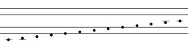2 Lines, Major Third Apart, All Solid Noteheads
(Panot Notation by George Skapski, 1956)
(except noteheads are oval instead of circular)
-
2 Lines, Major Third Apart, 6-6 Noteheads (C is Solid)
(Expanded Black-Oval Twinline by Paul Morris, 2006)
(except Morris optionally uses an extra ledger line)
-
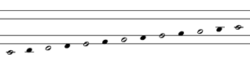2 Lines, Major Third Apart, 6-6 Noteheads (C is Hollow)
(Chromatic Lyre Notation by Jan Braunstein, 2009)
-
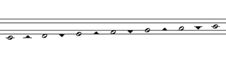2 Lines, Major Third, Compact Staff, 6-6 Noteheads (C is hollow)
(Black-Triangle Twinline by Doug Keislar, 2006)
-
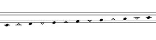2 Lines, Major Third, Compact Staff, 6-6 Noteheads (C is Solid)
(Black-Oval Twinline by Paul Morris, 2006)
-
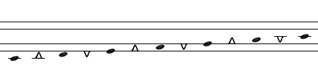2 Lines, Major Third, Compact Staff, 6-6 Noteheads (C is Solid)
(Bilinear Notation by José Sotorrío, 1997)
(except Sotorrio uses steeper triangles, etc)
-
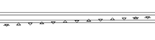2 Lines, Major Third, Compact Staff, All Hollow Noteheads
(TwinNote TD (Traditional Duration) by Paul Morris, 2009)